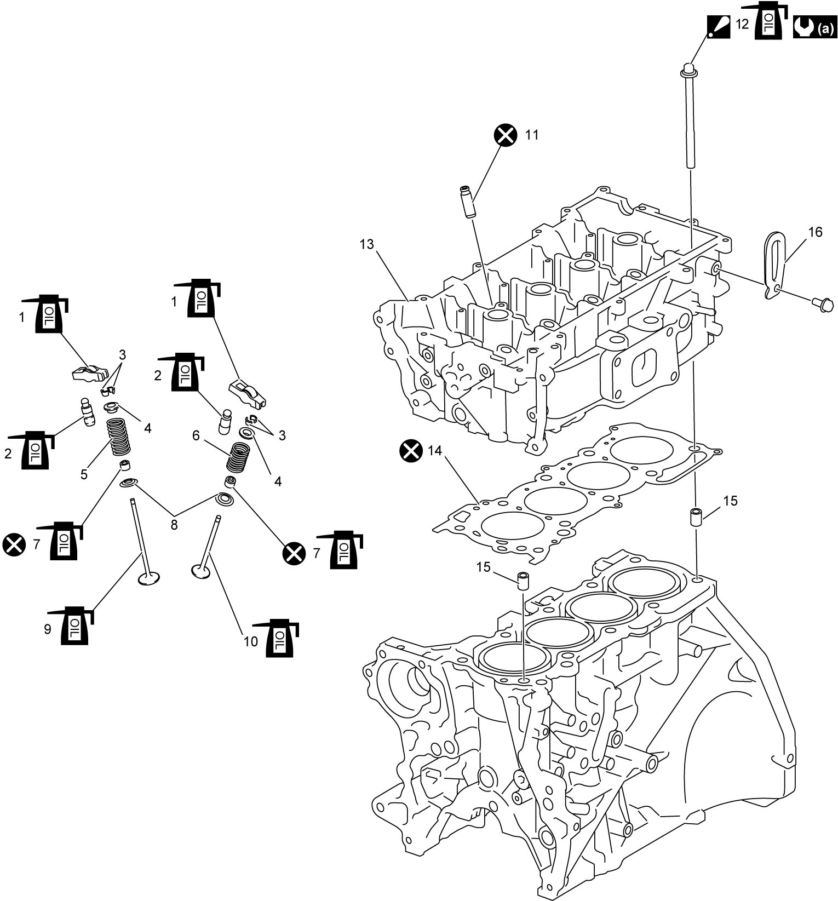

1D
| Valve and Cylinder Head Components |

 "Expand image")
 1. 1. |
Valve rocker arm : For applying engine oil, refer to Valve and Cylinder Head Removal and Installation:K14C. |
7. |
Valve stem seal : Apply engine oil to seal lip. |
13. | Cylinder head |
|
2. |
Valve lash adjuster : Apply engine oil. |
8. | Valve spring seat | 14. | Cylinder head gasket |
| 3. | Valve cotter |
9. |
Intake valve : Apply engine oil to sliding surface. |
15. | Dowel pin |
| 4. | Valve spring retainer |
10. |
Exhaust valve : Apply engine oil to sliding surface. |
16. | Engine hook |
| 5. | Intake valve spring | 11. | Valve guide |
 : : |
15 Nm → 30 N·m → +70° → +65° (1.5 kgf-m → 3.1 kgf-m → +70° → +65°, 11.0 lbf-ft → 22.5 lbf-ft → +70° → +65°) |
| 6. | Exhaust valve spring |
 12. 12. |
Cylinder head bolt : Check cylinder head bolt for deformation to reusing. : Apply engine oil to bolt thread. : For tightening order, refer to Valve and Cylinder Head Removal and Installation:K14C. |
 : : |
Do not reuse. |